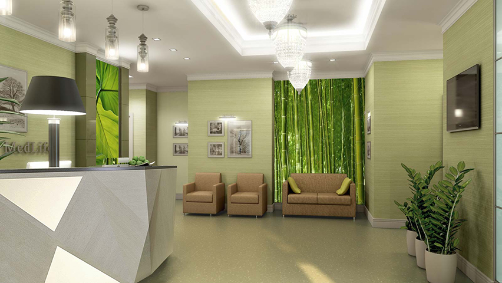

Багатопрофільність
В клініці працюють висококваліфіковані лікарі практично всіх спеціальностей.
Робота ведеться за командним принципом, що відображається на якості вирішення проблем.
Індивідуальний підхід
Створюється індивідуальний план та графік лікування, щоб досягти тривалих результатів.
Сучасність
Клініка оснащена найсучаснішим обладнанням провідних світових виробників,
а такокож засобами, які забезпечують безпеку лікування та комфорт.

Лабораторія
Лабораторія знаходиться прямо в поліклініці та оснащена сучасним обладнанням,
що гарантує високу якість при мінімальних затратах часу.
Комфорт
Клініка пропонує сучасну обстановку, турботливий догляд та персональну увагу кожному пацієнту.
Весь персонал вільно володіє українською та російською мовами.

Економія часу
В поліклініці не існує поняття "черга". Тому у Вас залишається більше часу на
дійсно важливі речі.